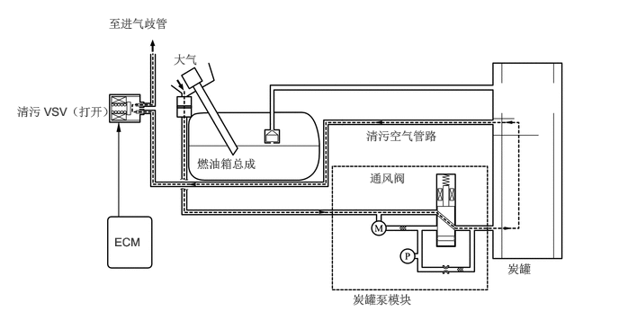
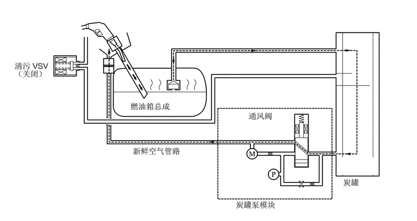
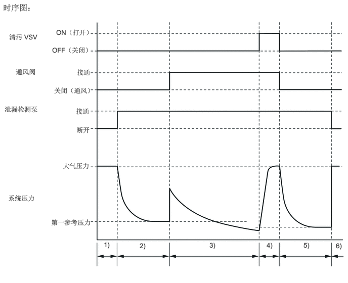
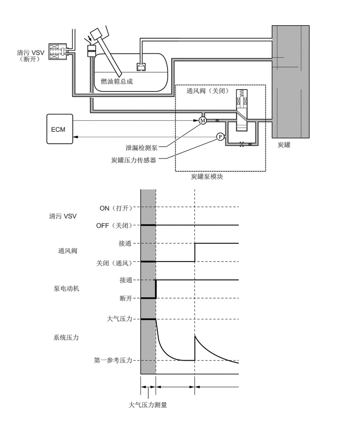
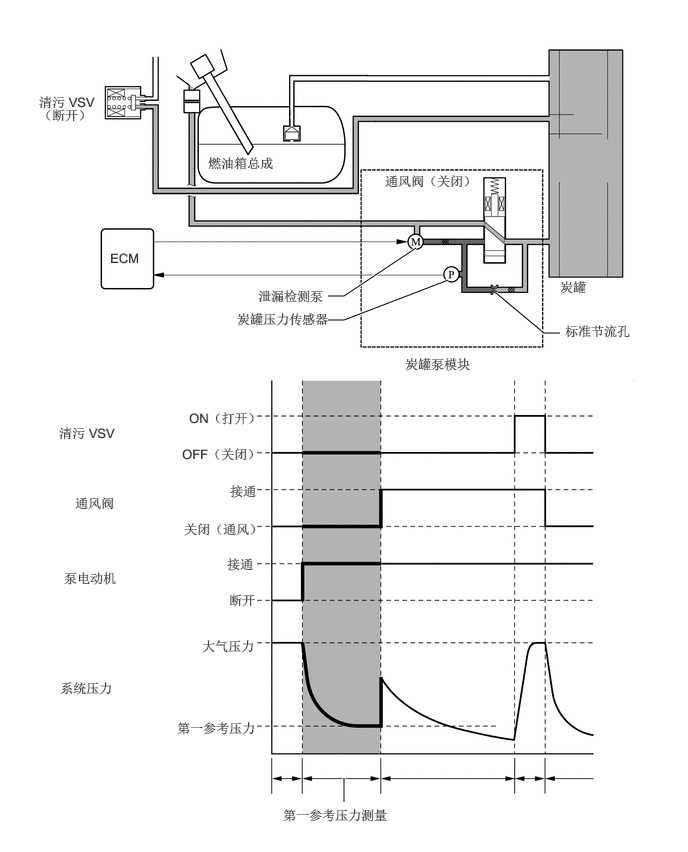
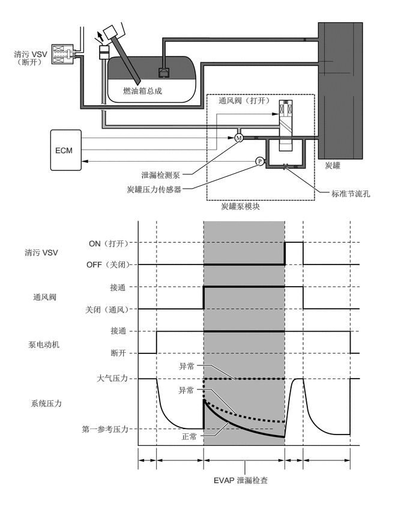
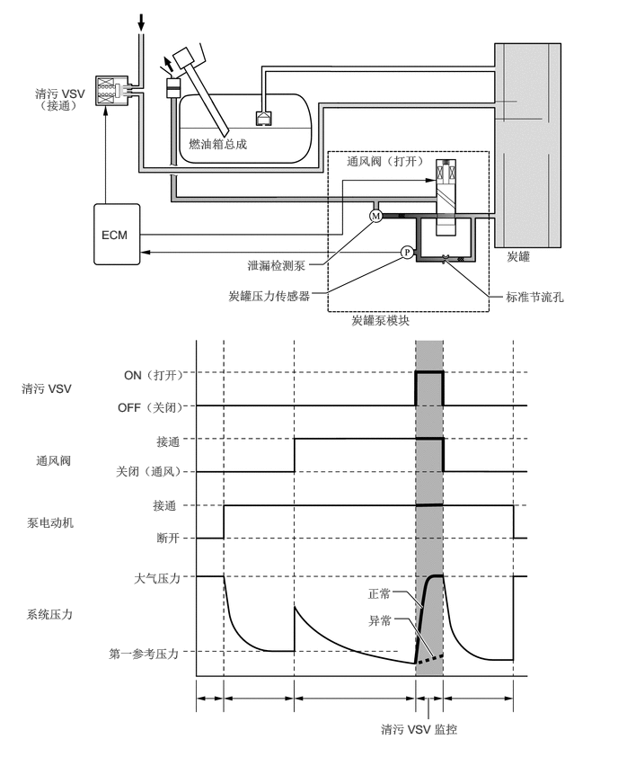
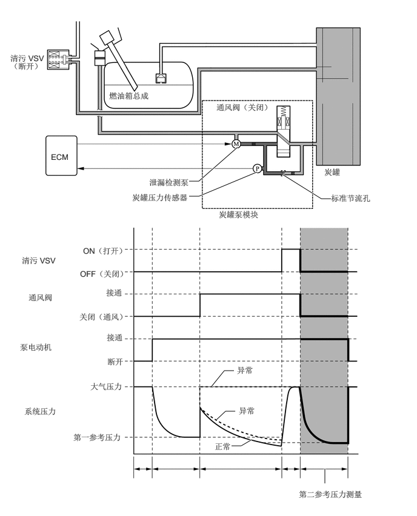

主要零部件的功能
燃油蒸汽排放控制系统的主要零部件如下：
| 零部件 | 功能 | |
|---|---|---|
| 炭罐 | 包含活性炭以吸收燃油箱总成内产生的燃油蒸汽。 | |
| 新鲜空气管路 | 清污空气进入炭罐，且净化的排气进入大气。 | |
| 炭罐泵模块 | 通风阀 | 根据来自 ECM 的信号打开和关闭新鲜空气管路。 |
| 泄漏检测泵和泵电动机 | 根据来自 ECM 的信号向燃油蒸汽排放系统施加真空。 | |
| 炭罐压力传感器 | 检测燃油蒸汽排放系统的压力，并将此信号发送至 ECM。 | |
| 清污 VSV | 系统清污时根据来自 ECM 的信号打开，使炭罐吸收的燃油蒸汽输送至进气歧管。系统监控模式下，该阀控制燃油箱总成的真空吸入量。 | |
| 炭罐滤清器 | 防止新鲜空气中的灰尘和碎屑进入系统。 | |
| ECM | 根据来自各种传感器的信号控制炭罐泵模块和清污 VSV，以达到适合驾驶条件的清污量。此外，ECM 还监控系统是否发生泄漏，如果发现故障，将会存储 DTC。 | |
工作条件
以下为进行燃油蒸汽排放泄漏检查所需的典型条件：
|
*：如果发动机冷却液温度未降到 35°C (95°F) 以下，时间会延长至 7 小时。此后，如果温度不低于 35°C (95°F)，则时间延长至 9.5 小时。 |
|
| 典型启动条件 | ·
关闭发动机后经过 5 小时*。 ·
海拔：低于 2,400 m (8,000 ft.) ·
蓄电池电压：10.5 V 或更高 ·
发动机开关：置于 OFF 位置 ·
发动机冷却液温度：4.4 至 35°C（40 至 95°F） ·
进气温度：4.4 至 35°C（40 至 95°F） |
炭罐泵模块执行燃油蒸汽排放泄漏检查。此检查在发动机关闭后约 5 小时进行。可能持续几分钟听到来自行李箱下方的声音。这并不表示存在故障。通过加压自炭罐泵模块至炭罐滤清器颈部的新鲜空气管路，采用精确压力测试程序。有关详情，请参考修理手册。
系统控制
清污气流控制
发动机达到预定状态 [闭环，发动机冷却液温度高于 60°C (140°F) 等] 时，只要 ECM 打开清污 VSV，存储的燃油蒸汽将从炭罐中清除。
ECM 将改变清污 VSV 的占空比，以控制清污气流量。清污气流量由进气歧管压力和清污 VSV 的占空比确定。允许大气压力进入炭罐，以确保清污真空施加到炭罐时连续保持清污气流。

车载燃油蒸汽回收 (ORVR)
加油期间燃油箱总成的内部压力升高时，燃油蒸汽进入炭罐。去除燃油蒸汽的空气将通过新鲜空气管路释放。采用通风阀以打开和关闭新鲜空气管路。除车辆在监控模式下外，该阀始终打开（即使发动机停止时）（只要车辆未在监控模式下，该阀将保持打开）。如果在系统监控模式下给车辆加油，则 ECM 将通过炭罐压力传感器判定加油，此传感器检测燃油箱总成内的压力突然升高，且 ECM 会打开通风阀。

EVAP 泄漏检查
EVAP 泄漏检查根据以下时序图进行：

| 顺序 | 操作 | 描述 | 时间 |
|---|---|---|---|
| 1) | 大气压力测量 | ECM 关闭通风阀（通风）并测量 EVAP 系统压力以确定大气压力。 | 60 秒 |
| 2) | 第一参考压力测量 | 泄漏检测泵产生负压（真空），由标准节流孔限制，并测量压力。ECM 将此确定为参考压力。 | 360 秒 |
| 3) | EVAP 泄漏检查 | 泄漏检测泵在 EVAP 系统中产生负压（真空）并测量 EVAP 系统压力。如果稳定压力高于参考压力，则 ECM 确定 EVAP 系统泄漏。如果在 15 分钟内 EVAP 压力未稳定，则 ECM 取消 EVAP 监控。 | 15 分钟内 |
| 4) | 清污 VSV 监控 | ECM 打开清污 VSV 并测量 EVAP 压力增量。如果压力增量大，则 ECM 视其为正常。 | 10 秒 |
| 5) | 第二参考压力测量 | 泄漏检测泵产生负压（真空），由标准节流孔限制，并测量压力。ECM 将此确定为参考压力。 | 60 秒 |
| 6) | 最终检查 | ECM 测量大气压力并记录监控结果。 | - |
工作原理
大气压力测量
发动机开关置于 OFF 位置时，清污 VSV 和通风阀关闭。因此，大气压力引入至炭罐。
ECM 使用炭罐压力传感器测量大气压力。
如果测量的大气压力超出范围，则 ECM 激活泄漏检测泵以监控压力变化。

参考压力测量
此测量的目的为确认泄漏检测泵工作情况，并提供基准测量值（用于后续泄漏测试步骤中进行对比）。
通风阀保持关闭，大气压力引入炭罐，且 ECM 激活泄漏检测泵，从而在靠近炭罐压力传感器的管道中产生真空。
此时，由于通过标准节流孔进入靠近泵和传感器的管道的大气压力，压力不会降至低于参考压力。
ECM 将标准值与此压力值进行对比。如果压力在容许范围内，则 ECM 将此压力作为参考泄漏压力存储。
如果压力低于标准值，则 ECM 确定标准节流孔阻塞，并在存储器中存储 DTC。
如果压力高于标准值，则 ECM 确定高流率压力通过标准节流孔，并在存储器中存储 DTC。

EVAP 泄漏检查
激活泄漏检测泵时，ECM 打开通风阀以将真空引入炭罐。
系统中的压力稳定时，ECM 将此压力与参考压力进行比较，以确定是否存在泄漏。
如果检测的压力低于参考压力，则 ECM 确定无泄漏。
如果检测的压力高于参考压力并接近大气压力，则 ECM 确定存在大量泄漏（大孔）并在存储器中存储 DTC。
如果检测的压力高于参考压力，则 ECM 确定存在少量泄漏（轻微泄漏）并在存储器中存储 DTC。

清污 VSV 监控
完成 EVAP 泄漏检查后，在泄漏检测泵激活时 ECM 打开清污 VSV（打开），并将大气压力从进气歧管引入至炭罐。
如果此时压力变化在正常范围内（出现压力变化），则 ECM 确定其为正常情况。
如果压力变化超出正常范围（出现压力变化不足），则 ECM 停止清污 VSV 监控（清污监控）并在存储器中存储 DTC。

第二参考压力测量
ECM 运行泄漏检测泵时，清污 VSV 和通风阀关闭且执行第二参考压力测量。
ECM 比较测量的压力与 EVAP 泄漏检查时的压力。
如果 EVAP 泄漏检查时的压力低于第二参考压力测量值，则 ECM 确定不存在泄漏。
如果 EVAP 泄漏检查时的压力高于参考压力并接近大气压力，则 ECM 确定存在大量泄漏（大孔）并在存储器中存储 DTC。
如果 EVAP 泄漏检查时的压力高于参考压力测量值，则 ECM 确定存在少量泄漏并在存储器中存储 DTC。
